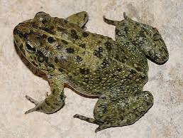
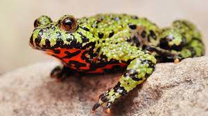
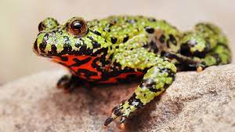
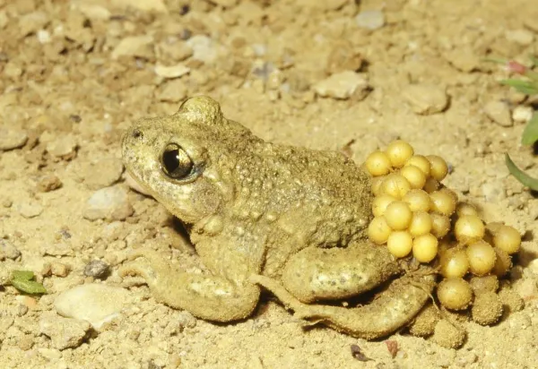
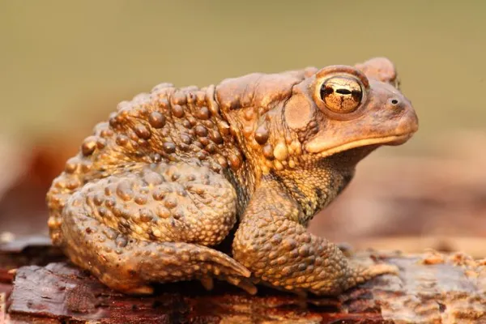
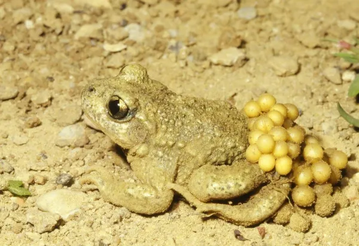
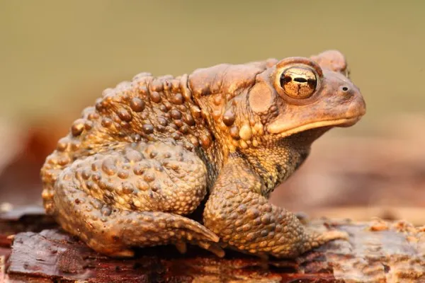

Top 6 espécies de sapos
Os sapos mais incríveis vocë vai encontrar aqui, aliás, obrigada por visitar o nosso site
Sapo-árabe (Sclerophrys arabica)
Tudo sobre essa espécie

Sapo-verde-de-Baloch (Bufotes zugmayeri)
Tudo sobre a espécie
 Sapo-de-barriga-de-fogo-oriental (Bombina orientalis)
Tudo sobre essa espécie

Sapo-cururu (Rhinella marina)
Tudo sobre essa espécie
Sapo-de-barriga-de-fogo-oriental (Bombina orientalis)
Tudo sobre essa espécie

Sapo-cururu (Rhinella marina)
Tudo sobre essa espécie
.jpeg) Sapo-parteiro-comum (Alytes maurus ou Alytes obstetricans)
Tudo sobre essa espécie

Sapo-americano (Anaxyrus americanusse)
Tudo sobre essa espécie

Sapo-parteiro-comum (Alytes maurus ou Alytes obstetricans)
Tudo sobre essa espécie

Sapo-americano (Anaxyrus americanusse)
Tudo sobre essa espécie

PARA VER UMA FOTO INÉDITA DE UM SAPO
Download do Arquivo
PARA ENTRAR EM UM SITE SÓ DE SAPOS
CLIQUE AQUI